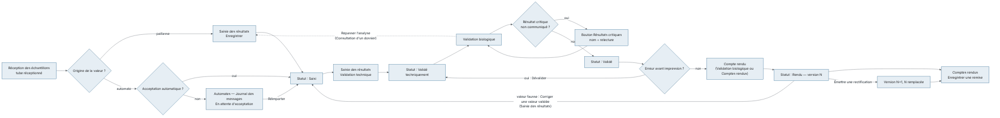
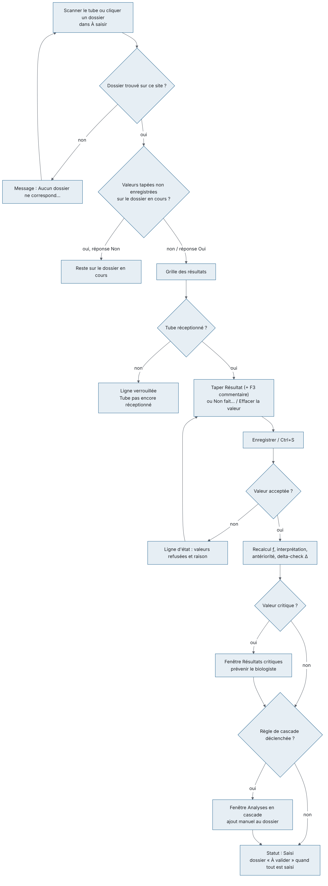
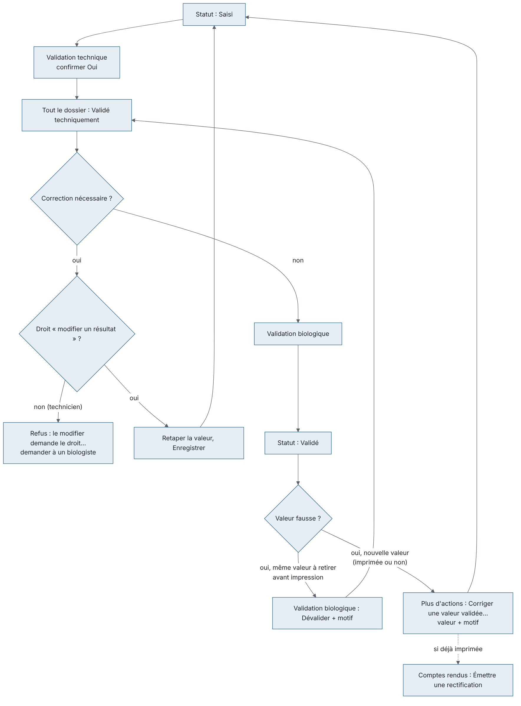
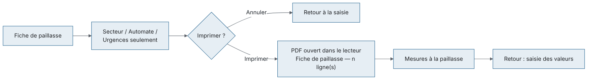
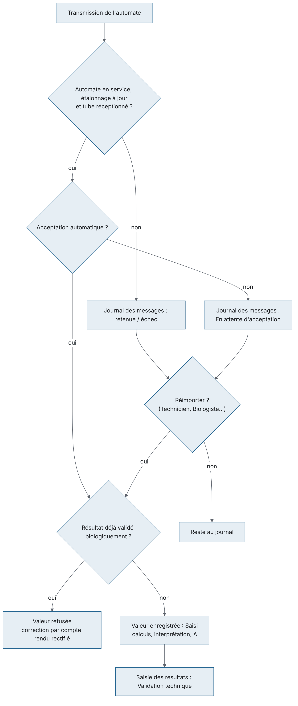
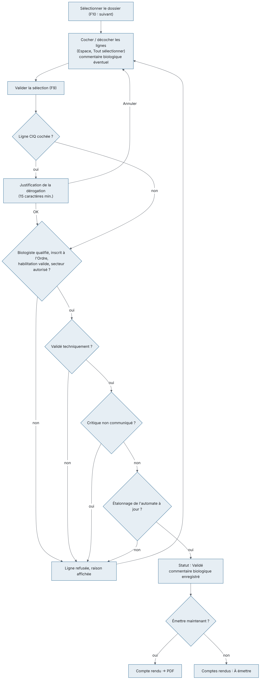
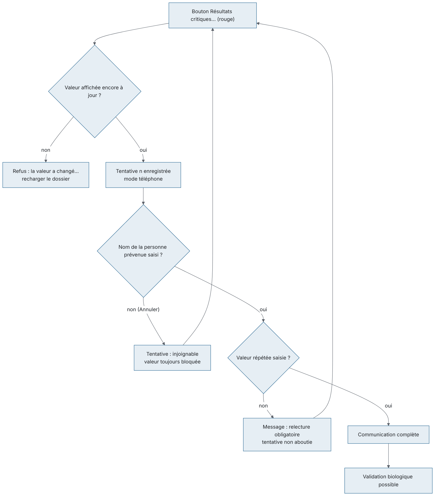
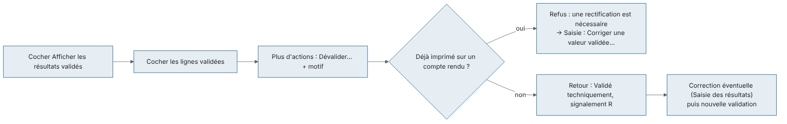
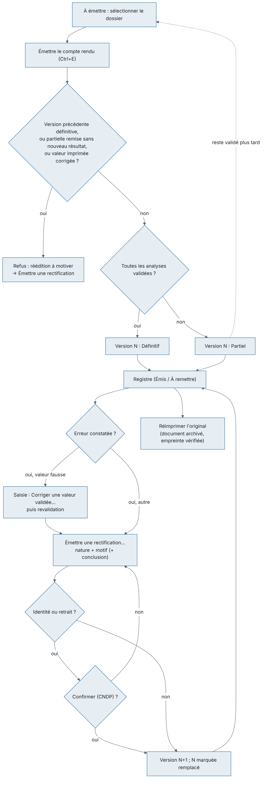
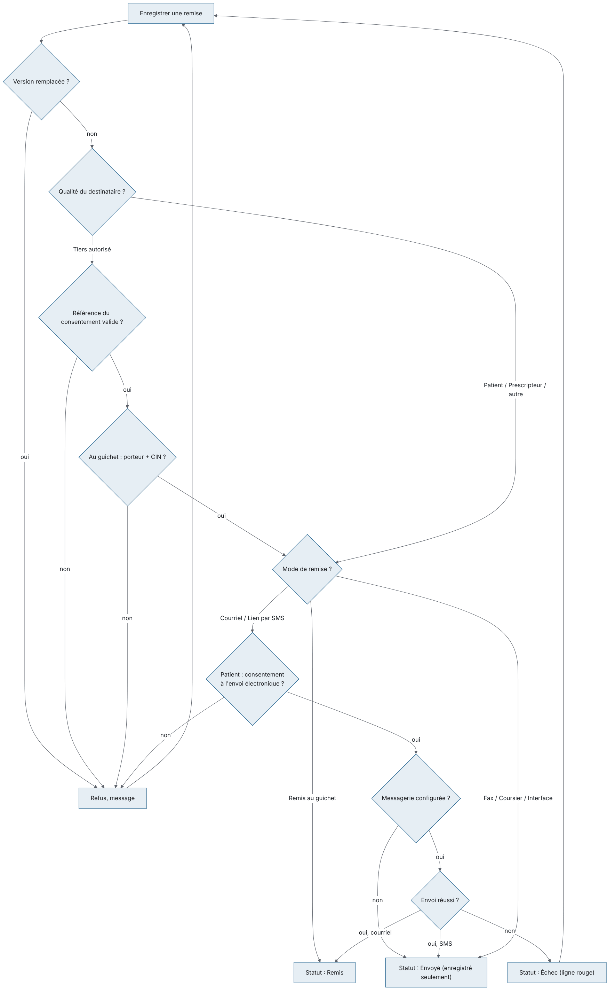

Ce chapitre couvre le travail de la paillasse jusqu'à la remise du compte rendu : saisie des résultats (manuelle ou par les automates), validation technique, validation biologique avec la communication des résultats critiques, puis émission, réimpression, remise et rectification des comptes rendus.
But du module. C'est le cœur du laboratoire : produire un résultat juste, le faire contrôler deux fois (validation technique par la paillasse, validation biologique par un biologiste habilité), prévenir le prescripteur d'une valeur critique, puis remettre au bon destinataire un compte rendu signé qui ne pourra plus jamais être modifié en silence. Chaque correction laisse une trace : l'ancienne valeur est gardée, le motif est demandé, et un compte rendu déjà remis ne se corrige que par une rectification numérotée.
Qui l'utilise.
| Rôle par défaut | Ce qu'il fait dans ce module |
|---|---|
| Technicien de laboratoire | Saisit les valeurs, marque « Non fait », valide techniquement, imprime la fiche de paillasse, réimporte les transmissions des automates retenues ou en échec. Ne modifie pas une valeur déjà validée techniquement. |
| Biologiste | Tout ce que fait le technicien, plus : modifie une valeur validée techniquement, corrige une valeur validée, valide biologiquement, communique les critiques, dévalide, écrit un commentaire biologique, émet et rectifie les comptes rendus, les réimprime et enregistre les remises. |
| Biologiste responsable, Administrateur | Tout le module, plus le réglage des interfaces des automates. |
| Secrétariat / accueil | Émet, réimprime et remet les comptes rendus (guichet, courriel, SMS…). |
| Responsable qualité | Consulte les résultats, les comptes rendus et les automates. |
| Prescripteur | Consulte et réimprime les comptes rendus de ses patients. |
Droits utilisés (identifiants affichés dans Utilisateurs et rôles) : saisir (results.enter), modifier un résultat validé techniquement (results.modify), valider techniquement (results.validate_technical), valider biologiquement (results.validate_biological), dévalider (results.unvalidate), saisir la communication d'un critique (results.enter_critical), consulter (results.view), éditer (reports.print), envoyer (reports.send), rectifier (reports.amend), réimprimer l'original (reports.reprint_validated), consulter les comptes rendus (reports.view), consulter les automates (instruments.view), rejouer les messages (instruments.replay), configurer et démarrer les interfaces. La validation biologique exige en plus une qualification de médecin ou pharmacien biologiste, inscrit à l'Ordre, habilité pour le secteur.
Écrans du module (groupe Liste de travail du menu, sauf Automates) :
| Menu | Droit qui ouvre l'écran | Raccourci par défaut |
|---|---|---|
| Saisie des résultats | Saisir des résultats | Ctrl+6 |
| Validation biologique | Valider biologiquement | Ctrl+7 |
| Comptes rendus | Consulter les comptes rendus | Ctrl+8 |
| Automates (résultats reçus) | Consulter les automates | aucun |
Liens avec les autres modules.
Le circuit normal d'un résultat est le suivant :
| Étape | Qui | Écran | Statut du résultat |
|---|---|---|---|
| Le tube est réceptionné | Technicien de laboratoire | Réception des échantillons | En attente de saisie |
| La valeur est saisie ou arrive de l'automate | Technicien de laboratoire (ou automate) | Saisie des résultats / Automates | Saisi |
| Le technicien contrôle la vraisemblance | Technicien de laboratoire | Saisie des résultats, bouton Validation technique | Validé techniquement |
| Le biologiste libère le résultat | Biologiste | Validation biologique | Validé |
| Le compte rendu est émis | Biologiste ou secrétariat | Validation biologique ou Comptes rendus | Rendu (imprimé) |
| Le compte rendu est remis | Secrétariat / accueil | Comptes rendus, Enregistrer une remise | — |
Vue d'ensemble :

Raccourcis valables dans tous les écrans de ce chapitre : Ctrl+6 ouvre Saisie des résultats, Ctrl+7 Validation biologique, Ctrl+8 Comptes rendus ; F5 actualise l'écran ; Ctrl+F place le curseur dans la première zone de recherche de l'écran ; Ctrl+P imprime la liste principale de l'écran ; Ctrl+S appuie sur le bouton Enregistrer de l'écran quand il en a un ; F1 ouvre l'aide de l'écran ; Maj+F1 affiche la liste des raccourcis (réglables).
C'est l'écran de la paillasse. On y ouvre un dossier (par scan du tube ou depuis la liste), on tape les valeurs, on enregistre, puis on valide techniquement. On y marque une analyse « Non fait », on efface une valeur tapée par erreur, on ajoute un commentaire technique, on consulte les antériorités et on imprime la fiche de paillasse. Un biologiste y corrige aussi une valeur déjà validée.
Qui y a accès
Scénarios
Le dossier s'ouvre et le curseur se place sur la première case Résultat vide. - Le n° doit être exact (majuscules comprises). S'il ne correspond à rien sur votre site : « Aucun dossier ne correspond à « … » sur ce site. »
Ouvrir un dossier depuis la liste À saisir
Si des valeurs tapées n'ont pas été enregistrées, l'application demande : « Des modifications n'ont pas été enregistrées. Voulez-vous continuer ? ». Répondez Non pour rester sur le dossier en cours. La même question est posée en quittant l'écran.
Saisir les valeurs d'un dossier
Quand toutes les valeurs sont saisies, la pastille du dossier passe à « À valider » : il reste dans la liste jusqu'à la validation technique.
Marquer une analyse « Non fait »
La ligne est enregistrée « Non fait » (les autres valeurs tapées sont enregistrées avec elle) et suit la validation comme une valeur.
Effacer une valeur tapée par erreur
Confirmez « Effacer la valeur « … » de « … » ? La ligne redevient à saisir. ». - Vider la case puis Enregistrer ne retire rien : une case vide est ignorée. Utilisez Effacer la valeur.
Corriger une valeur avant validation technique : retapez la valeur et Enregistrer. Tant que la valeur n'est pas validée techniquement, la correction fait partie de la saisie.
Corriger une valeur déjà validée techniquement (pas encore validée biologiquement) - Possible seulement avec le droit « modifier un résultat » (biologistes). Sinon : « … : ce résultat est déjà validé techniquement, le modifier demande le droit « modifier un résultat ». » - La valeur corrigée repasse au statut Saisi : il faut refaire la Validation technique.
Corriger une valeur validée biologiquement, imprimée ou non (biologiste)
Si l'ancienne valeur était imprimée : Comptes rendus › Plus d'actions › Émettre une rectification… (nature « Correction de résultat »). Le compte rendu rectifié nomme les paramètres corrigés. - Pour seulement retirer une validation sans changer la valeur, utilisez Dévalider dans Validation biologique (avant impression).
Faire la validation technique d'un dossier
« Opération effectuée. » : toutes les valeurs saisies du dossier, tous secteurs confondus, passent validées techniquement. Une analyse dont toutes les lignes sont validées techniquement (ou « Non fait ») passe à l'étape suivante et apparaît dans Validation biologique. Le dossier quitte la liste À saisir quand plus rien n'attend, et le bouton Validation technique redevient gris. - On ne peut pas valider techniquement une seule ligne : c'est tout le dossier. - Une valeur arrivée tard (par exemple d'un second automate) se valide de la même façon : seule la nouvelle valeur reçoit votre nom et l'heure ; celles qu'un collègue avait déjà validées gardent son nom et son heure de contrôle.
Consulter les antériorités d'un paramètre
Imprimer la fiche de paillasse
Réagir à un résultat critique à l'enregistrement
Réagir à une analyse en cascade proposée
Règles et contrôles
Flux
Réception des échantillons → Saisie des résultats (ou arrivée par l'automate) → Validation technique → Validation biologique. Une analyse à refaire se renvoie à la paillasse depuis « Consultation d'un dossier », bouton « Repasser l'analyse ».
Saisie et enregistrement :

Validation technique et corrections :

Fiche de paillasse :

Les automates connectés envoient leurs valeurs directement dans les dossiers. L'écran Automates montre chaque liaison, sa table de correspondance et le Journal des messages : on y voit ce qui est arrivé, ce qui a été retenu ou refusé et pourquoi, et on y réimporte une transmission retenue. On peut aussi tester une trame sans rien enregistrer. Ce paragraphe décrit ce qui concerne les résultats ; le réglage complet des interfaces, la fenêtre Tester une trame et l'interface COBAS INTEGRA 400 plus sont décrits dans le chapitre Administration (section Automates).
Qui y a accès
Ce qui se passe à l'arrivée d'une transmission
Le Roche COBAS INTEGRA 400 plus a son propre protocole : c'est le LIS qui l'interroge (résultats, tubes sans demande) et lui envoie la liste de travail. Dans sa table de correspondance, le code automate est le numéro de test de l'application Roche : « 031 », « 31 » ou « 0-031 » désignent le même test, et le résultat qui revient en « 031 » retrouve sa ligne quelle que soit l'écriture choisie. Le préréglage, la table des numéros de test de la base de démonstration, les refus à l'enregistrement de la table et le bouton Exemple de trame sont décrits au chapitre Administration, section Automates, « Interface COBAS INTEGRA 400 plus ».
Fenêtre « Tester une trame » : collez une trame (ou chargez la dernière reçue, ou Exemple de trame pour un INTEGRA), puis Analyser la trame : la grille dit, pour chaque résultat, le tube, le dossier et le patient, le paramètre trouvé et Ce que ferait le LIS. Rien n'est enregistré. Procédure complète : chapitre Administration, section Automates, scénario « Tester une trame ».
Scénarios
Règles et contrôles
Flux
Automate → (Réimporter si retenue) → Saisie des résultats, Validation technique → Validation biologique.

C'est l'écran du biologiste. Il liste les dossiers dont des résultats validés techniquement attendent la validation biologique, montre pour chacun le contexte utile (anomalies, retard, critiques, contrôle qualité, renseignements cliniques), et permet de libérer les résultats, de tracer l'appel des résultats critiques, d'ajouter un commentaire biologique, de dévalider et d'émettre le compte rendu.
Qui y a accès
Scénarios
La ligne d'état indique le nombre de résultats validés (« 1 résultat validé », « 3 résultats validés », ou « 0 résultat validé » si tout a été refusé) ; la liste se recharge. Le dossier disparaît quand plus rien n'attend. Quand le dernier dossier est validé, la liste est vide et Valider la sélection reste grisé. - Les résultats refusés sont listés dans une fenêtre, chacun avec sa raison ; les autres sont validés quand même.
Valider une partie d'un dossier
Valider la sélection. Les lignes décochées restent en attente.
Ajouter un commentaire biologique
Validez la ligne : le commentaire est enregistré avec la validation. - En quittant l'écran avec des commentaires non enregistrés : « n commentaire(s) biologique(s) saisi(s) ne sont pas encore enregistrés : ils le sont à la validation de leur ligne. Quitter l'écran et les abandonner ? ».
Valider un résultat couvert par un contrôle interne hors limites
Saisissez la justification et validez. Elle est inscrite sur le point de contrôle concerné. - Annuler la fenêtre annule toute la validation.
Communiquer un résultat critique (appel avec relecture)
La communication est enregistrée (date, heure, auteur, destinataire, valeur répétée). Le dossier se recharge ; la valeur peut maintenant être validée. - Si vous annulez la première fenêtre, l'appel est enregistré comme « interlocuteur injoignable » et la valeur reste bloquée ; recommencez plus tard (chaque tentative est numérotée). - Si vous laissez la relecture vide : « La communication n'est complète que si l'interlocuteur a répété la valeur transmise. » et la tentative est enregistrée comme non aboutie. - Le mode est toujours « téléphone » ; ni le numéro appelé, ni la fonction de la personne, ni le prescripteur ne sont demandés.
Consulter les antériorités : ligne sélectionnée, Antériorités ou double-clic dans la case Antériorité.
Émettre le compte rendu depuis cet écran
Le PDF s'ouvre dans votre lecteur ; la ligne d'état indique « Compte rendu vN — Enregistré. ». - Le compte rendu porte tous les résultats validés du dossier. S'il reste des analyses non validées, il est partiel (mention sur le document). Langue : celle choisie à l'enregistrement du dossier. Pas de conclusion possible ici (voir Comptes rendus, rectification).
Dévalider un résultat (avant impression)
Règles et contrôles
Flux
Saisie des résultats (validation technique) → Validation biologique → Compte rendu ici ou dans Comptes rendus → remise. Les dossiers validés en partie dont le reste est encore à la paillasse s'émettent depuis Comptes rendus (onglet « À émettre »).
Validation d'un dossier :

Communication d'un résultat critique :

Dévalidation :

C'est le registre des comptes rendus. On y émet les comptes rendus en attente, on réimprime l'original archivé, on enregistre chaque remise (guichet, courriel, SMS, fax, coursier…) et on émet les rectifications. Trois onglets séparent ce qui reste à émettre, ce qui a été émis et ce qui reste à remettre ; un aperçu de la première page aide à reconnaître le document.
Qui y a accès
Scénarios
Le PDF s'ouvre ; « Compte rendu … vN émis ». Le dossier passe dans le registre. - Un compte rendu partiel porte la mention correspondante ; il sera remplacé par le définitif quand le reste sera validé, sans qu'il s'agisse d'une rectification.
Réimprimer un compte rendu
Le document archivé, identique à l'original, s'ouvre ; « Réimpression de … vN — l'accès est journalisé. » - Ne réémettez pas pour réimprimer : réémettre un définitif est refusé (voir Règles).
Remettre un compte rendu au guichet au patient
Enregistrer. La remise est « Remis » immédiatement ; « Remise enregistrée — … vN ».
Remettre à un porteur ou à un tiers
Enregistrer. - La référence attendue est l'identifiant interne du consentement (longue suite de chiffres et lettres) : il faut la recopier depuis la fiche du patient (Consentements).
Envoyer par courriel ou par SMS
Enregistrer. Messages : « … : compte rendu envoyé par e-mail à … », « … : SMS envoyé au … », ou en cas d'échec « L'envoi à … a échoué : … » puis « … : échec de l'envoi, voir le détail des remises. » (ligne en rouge dans les remises). Recommencez avec Enregistrer une remise. - Pour le patient, son consentement à l'envoi électronique est exigé.
Envoyer par fax, coursier ou interface - Fax : numéro obligatoire ; coursier : indiquez le porteur. Ces remises sont enregistrées, l'envoi lui-même se fait hors de l'application.
Émettre une rectification
Règles et contrôles
Flux
Validation biologique → Comptes rendus (émission, puis remise) → archivage. Le Tableau de bord signale les résultats critiques non communiqués ; l'onglet À remettre signale les définitifs critiques non remis.
Émission et rectification :

Remise :

Les textes sont ceux affichés par l'application. « … » remplace une valeur insérée (paramètre, n° de dossier, valeur, date). Un message de refus ne modifie rien : corrigez puis recommencez. Quand plusieurs valeurs sont refusées en même temps, la ligne d'état ou la fenêtre les liste toutes. Les messages communs à tous les écrans (droits, session, connexion) sont décrits dans le chapitre de prise en main.
| Message | Quand il apparaît | Que faire |
|---|---|---|
| « Aucun dossier ne correspond à « … » sur ce site. » | N° de dossier ou code-barres inconnu sur votre site. | Vérifiez la saisie ou le tube ; le dossier est peut-être d'un autre site. |
| « Le numéro de dossier est obligatoire. » | Ouvrir avec une zone vide. | Scannez ou tapez le n°. |
| « Dossier introuvable. » / « Patient introuvable. » | Dossier ou patient supprimé ou fusionné entre-temps. | Actualisez la liste. |
| « Des modifications n'ont pas été enregistrées. Voulez-vous continuer ? » | Changement de dossier ou sortie de l'écran avec des valeurs tapées. | Non pour revenir et enregistrer ; Oui pour les abandonner. |
| « Tube pas encore réceptionné pour : … Ces lignes sont verrouillées jusqu'à la réception. » | Ouverture d'un dossier dont un tube n'est pas reçu. | Réceptionnez le tube, puis rouvrez le dossier. |
| « … : le tube n'est pas encore réceptionné. Réceptionnez-le avant de saisir le résultat. » | Clic ou saisie dans une ligne verrouillée. | Idem. |
| « Ce résultat est validé : toute modification doit passer par une rectification motivée. » | Clic dans la case d'une valeur validée. | Biologiste : Plus d'actions › Corriger une valeur validée…. |
| « Aucun élément sélectionné. » | Enregistrer sans aucune ligne modifiée. | Rien à enregistrer. |
| « « … » n'est pas une valeur numérique valide. » | Texte dans un paramètre numérique. | Tapez un nombre (virgule ou point). |
| « Opérateur « … » non reconnu ; utilisez <, >, ≤ ou ≥. » / « Opérateur de censure invalide. » | Valeur censurée mal écrite. | Écrivez par exemple « <5 » ou « >1000 ». |
| « La valeur … est techniquement impossible pour ce paramètre. » | Valeur hors des limites physiques réglées au catalogue. | Vérifiez la frappe ou l'unité. |
| « « … » ne fait pas partie des réponses autorisées pour ce paramètre. » | Code de réponse inconnu. | Tapez un code défini au catalogue. |
| « Le titre doit être un entier positif. » | Titre mal écrit (« 1/0 », « 1/-2 »…). | Écrivez « 1/320 », « 1:320 » ou « 320 ». |
| « Le texte du résultat est obligatoire. » / « Le texte du résultat dépasse … caractères. » | Paramètre texte vide ou trop long. | Saisissez ou raccourcissez le texte. |
| « Le paramètre … est calculé : sa valeur ne se saisit pas. » | Tentative de saisie ou de correction d'un paramètre ƒ. | Corrigez les valeurs qui servent au calcul. |
| « … : cette analyse est annulée, aucun résultat ne peut y être saisi. » | Saisie sur une analyse annulée entre-temps. | Actualisez le dossier. |
| « … : ce résultat est déjà validé techniquement, le modifier demande le droit « modifier un résultat ». » | Technicien de laboratoire qui retape une valeur validée techniquement. | Demandez à un biologiste. |
| « Ce résultat est déjà validé. » | Action sur une valeur déjà validée (autre poste). | Actualisez. |
| « Paramètre introuvable (…). » / « Résultat introuvable (…). » | Paramètre retiré du catalogue ou ligne supprimée. | Actualisez ; prévenez l'administrateur si cela persiste. |
| « Pourquoi « … » n'a-t-il pas été réalisé ? Le motif est imprimé sur le compte rendu à la place du résultat. » | Non fait…. | Saisissez le motif (3 caractères au moins). |
| « Indiquez pourquoi l'analyse n'a pas été réalisée. » | Motif de « Non fait » vide. | Saisissez le motif. |
| « Effacer la valeur « … » de « … » ? La ligne redevient à saisir. » | Effacer la valeur. | Oui pour effacer. |
| « Valeur corrigée pour « … » (valeur validée : … …) : » puis « Motif de la correction de « … ». Il est conservé avec l'ancienne valeur dans l'historique du résultat. » | Corriger une valeur validée…. | Tapez la nouvelle valeur puis un motif de 15 caractères au moins. |
| « Indiquez la valeur corrigée. » | Nouvelle valeur vide. | Tapez la valeur. |
| « La rectification d'un résultat doit être motivée. » | Motif de correction vide. | Saisissez le motif. |
| « … n'est pas encore validé : corrigez la valeur directement dans la saisie. » | Correction demandée sur une valeur non validée biologiquement. | Retapez la valeur dans la grille. |
| « La valeur indiquée pour … est celle déjà validée : pour seulement retirer la validation, utilisez « Dévalider ». » | Nouvelle valeur identique à l'ancienne. | Changez la valeur, ou dévalidez dans Validation biologique. |
| « Seul un médecin ou un pharmacien biologiste peut procéder à la validation biologique. » (et les autres messages de qualification, voir Validation biologique) | Correction d'une valeur validée par une personne non habilitée. | Demandez à un biologiste habilité pour le secteur. |
| « Vous n'avez pas le droit d'effectuer cette opération. » | Correction d'une valeur déjà imprimée sans le droit de rectifier les comptes rendus. | Demandez à un biologiste qui a ce droit. |
| « « … » est corrigé. L'ancienne valeur est conservée … (Comptes rendus › Émettre une rectification). » | Correction enregistrée. | Faites la validation technique puis biologique ; émettez une rectification si la valeur était imprimée. |
| « Résultats critiques non communiqués … Un résultat critique doit être communiqué au prescripteur avant sa validation. » | Enregistrement d'une valeur critique. | Prévenez le biologiste (bouton Résultats critiques… de Validation biologique). |
| « Analyses en cascade … » | Règle de cascade déclenchée. | Ajoutez l'analyse au dossier si elle est justifiée. |
| « Validation technique » (confirmation) | Clic sur Validation technique. | Oui pour valider tout le dossier (les valeurs déjà validées gardent leur premier contrôle). |
| « Aucun résultat à valider. » | Validation technique sans valeur saisie. | Saisissez d'abord les valeurs. |
| « Aucune analyse en attente de saisie pour cette sélection. » | Fiche de paillasse sans ligne pour le secteur, l'automate ou les urgences choisis. | Changez la sélection. |
| « Le secteur choisi est introuvable. » / « L'automate choisi est introuvable sur ce site. » / « Site introuvable. » | Fiche de paillasse avec un secteur ou un automate supprimé. | Fermez et rouvrez la fenêtre. |
| Message | Quand il apparaît | Que faire |
|---|---|---|
| « Cette ligne ne peut pas être réimportée : seules les transmissions en échec, partielles ou retenues le peuvent. » | Réimporter sur une transmission déjà traitée. | Rien à faire ; choisissez une autre ligne. |
| « Réimporter cette transmission ? Les valeurs de l'automate seront enregistrées au dossier du patient. » | Confirmation de Réimporter. | Oui après avoir vérifié la trame. |
| « Réimportation effectuée : … valeur(s) enregistrée(s). » | Réimport réussi. | Faites la validation technique. |
| « Réimportation effectuée, aucune valeur enregistrée : lisez les anomalies de la ligne. » | Réimport sans valeur acceptée. | Lisez la raison de chaque résultat dans le journal. |
| « Seule une trame reçue se réimporte : une trame émise est notre propre liste de travail. » | Réimport d'une trame envoyée à l'automate. | Choisissez une trame reçue. |
| « Une transmission dans l'état … ne se réimporte pas. » | État non réimportable. | Rien à faire. |
| « La trame enregistrée est vide : il n'y a rien à réimporter. » | Trame vide au journal ou dans la fenêtre de test. | Collez une trame ou chargez la dernière reçue. |
| « La trame reste illisible (…) : la réimportation ne corrige pas une transmission corrompue. » | Trame abîmée. | Faites renvoyer les résultats par l'automate. |
| « Le protocole … n'a pas d'analyseur de trames dans cette version. » | Protocole non pris en charge. | Prévenez l'administrateur. |
| « Message introuvable au journal. » | Ligne purgée entre-temps. | Actualisez. |
| « Transmission retenue : l'acceptation automatique est désactivée sur cette interface. » | Arrivée d'une transmission sans acceptation automatique. | Vérifiez puis Réimporter. |
| « Tube … pas encore réceptionné : le résultat attend dans le journal. Rejouez-le après la réception. » | Résultat d'un tube non reçu. | Réceptionnez le tube puis Réimporter. |
| « … a un étalonnage dépassé : résultats retenus. Enregistrez l'étalonnage, puis réimportez. » | Étalonnage échu. | Faites enregistrer l'étalonnage (Équipements), puis réimportez. |
| « … est hors service : résultats retenus. Remettez l'équipement en service, puis réimportez. » (même message pour « en maintenance ») | Automate hors service ou en maintenance. | Remettez l'équipement en service, puis réimportez. |
| « … est en qualification : résultats retenus jusqu'à sa mise en service. » / « … est déclaré « secours » : résultats retenus. Passez-le en service pour les accepter. » | Automate pas encore en service ou de secours. | Passez-le en service si c'est voulu. |
| « … est réformé : ses résultats ne sont pas acceptés. » / « … a une date de réforme dépassée : ses résultats ne sont pas acceptés. » | Automate réformé. | Les résultats ne peuvent pas être importés ; saisissez-les si l'analyse est refaite ailleurs. |
| « La transmission ne porte aucun identifiant d'échantillon. » / « Code-barres inconnu : aucun tube enregistré ne correspond. » / « Code-barres ambigu : plusieurs tubes correspondent, aucun résultat n'a été attribué. » | Tube absent ou illisible dans la trame. | Vérifiez l'étiquette sur l'automate ; saisissez au besoin à la main. |
| « Tube refusé ou éliminé : le résultat n'est pas rendable. » / « Aucun dossier rattaché à ce tube. » / « Dossier annulé : les résultats ne sont pas enregistrés. » | Tube ou dossier non utilisable. | Rien à importer. |
| « Code automate inconnu de la table de correspondance : la valeur n'a pas été enregistrée. » | Code absent de la table. Pour un INTEGRA, le numéro de test est reconnu quelle que soit son écriture dans la table (« 0-031 », « 31 ») : le message signale donc un numéro vraiment absent. | Faites compléter la Table de correspondance, puis réimportez. |
| « L'automate a rendu une analyse non demandée sur ce tube. » | Résultat sans demande. | Ajoutez l'analyse au dossier si elle est prescrite. |
| « Le paramètre associé à ce code n'existe plus au catalogue. » | Paramètre retiré. | Faites corriger la table. |
| « Résultat déjà validé biologiquement : la correction passe par un compte rendu rectifié. » / « L'automate transmet une correction d'un résultat déjà validé : elle exige un compte rendu rectifié. » | Nouvelle valeur pour un résultat validé. | Biologiste : Corriger une valeur validée… si la nouvelle valeur est la bonne. |
| « L'automate signale l'analyse comme non réalisée. » / « Valeur vide transmise pour ce paramètre. » / « Valeur non numérique transmise pour un paramètre numérique. » / « Ce type de résultat ne se transmet pas depuis un automate. » | Valeur inexploitable. | Refaites la mesure ou saisissez à la main. |
| « Résultat de contrôle reçu alors que le routage vers le CIQ est désactivé : il n'a pas été enregistré. » / « Résultat de contrôle sans numéro de lot : … » / « Aucune cible de contrôle définie pour ce paramètre sur cet automate : … » | Résultat de contrôle qualité non rattachable. | Voir le chapitre Qualité et équipements (Contrôle interne). |
| « L'import de cette transmission n'a pas abouti (erreur ou arrêt du poste pendant le traitement) ; elle peut être rejouée. » | Arrêt pendant le traitement. | Réimporter. |
| « Trame COBAS INTEGRA illisible : aucun en-tête de bloc (code automate, identifiant, code de bloc). » | Trame INTEGRA mal formée. | Vérifiez le câble et les réglages série ; faites renvoyer. |
| « Somme de contrôle du bloc COBAS INTEGRA incorrecte (…) : la trame a pu être altérée. » | Bloc INTEGRA abîmé en transmission. | Faites renvoyer les résultats ; vérifiez le câble. |
| « L'automate COBAS INTEGRA a signalé une erreur (bloc 99, code …). » | Erreur renvoyée par l'INTEGRA. | Lisez le code dans le manuel de l'automate. |
| « Bloc COBAS INTEGRA … ignoré : ce type de bloc n'est pas traité. » / « Résultat d'étalonnage COBAS INTEGRA lu mais non importé. » | Bloc non utilisé par le LIS. | Rien à faire (information). |
| « Bloc de résultats COBAS INTEGRA sans résultat. » / « Ligne de résultat COBAS INTEGRA sans numéro de test : « … ». » | Bloc ou ligne de résultat incomplet. | Faites renvoyer ; vérifiez la définition du test sur l'automate. |
| « Aucune trame de résultats reçue sur cette liaison. » | Charger la dernière trame reçue sans réception antérieure. | Collez une trame ou utilisez Exemple de trame (INTEGRA). |
| Message | Quand il apparaît | Que faire |
|---|---|---|
| « Aucun élément sélectionné. » | Valider la sélection ou Dévalider… sans ligne cochée utilisable. | Cochez les lignes (validées techniquement pour valider, déjà validées pour dévalider). |
| « … résultat validé » / « … résultats validés » (ligne d'état ; en rouge si des lignes ont été refusées) | Après Valider la sélection : nombre de lignes réellement validées (« 0 résultat validé » si toutes ont été refusées). | Si le nombre est inférieur aux lignes cochées, lisez la fenêtre des refus et traitez chaque raison. |
| « Seul un médecin ou un pharmacien biologiste peut procéder à la validation biologique. » | Utilisateur sans qualification de biologiste. | Faites valider par un biologiste. |
| « Le biologiste doit être inscrit à l'Ordre pour valider un résultat. » | N° d'Ordre absent de la fiche utilisateur. | Faites compléter la fiche (administrateur). |
| « L'habilitation du biologiste a expiré le … » | Habilitation échue. | Faites renouveler l'habilitation (administrateur). |
| « Le secteur … n'entre pas dans le périmètre de validation de cet utilisateur. » | Secteur hors périmètre. | Faites valider par un biologiste du secteur. |
| « Cet utilisateur est désactivé. » / « Votre session a expiré. Reconnectez-vous. » | Compte désactivé ou session close. | Reconnectez-vous ; appelez l'administrateur. |
| « La validation technique doit précéder la validation biologique. » | Ligne seulement saisie. | Faites la validation technique dans Saisie des résultats. |
| « Un résultat critique doit être communiqué au prescripteur avant sa validation. » | Critique non communiqué. | Résultats critiques…. |
| « Le contrôle interne couvrant ce résultat est hors limites : une dérogation motivée est requise. » (fenêtre « Dérogation contrôle interne ») | Ligne couverte par un CIQ hors limites. | Saisissez la Justification de la dérogation (15 caractères au moins) ou ne validez pas. |
| « L'étalonnage de cet automate est échu depuis le … : aucun résultat patient ne peut être produit. » | Valeur produite sur un automate à l'étalonnage échu. | Faites enregistrer l'étalonnage, repassez l'analyse. |
| « Aucun résultat à valider. » / « Ce résultat est déjà validé. » | Rien à valider, ou validé sur un autre poste. | Actualisez. |
| « Indiquez l'identité de la personne prévenue. » | Appel d'un critique. | Tapez le nom de la personne jointe (ou Annuler si injoignable). |
| « Faites répéter la valeur par votre interlocuteur et saisissez ce qu'il a répété. » | Relecture d'un critique. | Tapez la valeur répétée. |
| « La communication n'est complète que si l'interlocuteur a répété la valeur transmise. » | Relecture vide. | Rappelez et faites répéter la valeur. |
| « … : la valeur a changé depuis l'affichage de l'écran (nouveau passage sur l'automate ou correction). Rechargez le dossier et communiquez la valeur actuelle. » | Valeur modifiée entre l'affichage et l'appel. | Actualisez puis recommencez l'appel. |
| « Fiche de communication introuvable. » | Fiche d'appel supprimée ou close ailleurs. | Actualisez. |
| « Motif de la dévalidation de … résultat(s). … » | Dévalider…. | Saisissez un motif de 15 caractères au moins. |
| « La dévalidation doit être motivée. » | Motif vide. | Saisissez le motif. |
| « Le compte rendu a déjà été diffusé : une rectification est nécessaire. » | Dévalidation d'un résultat déjà imprimé. | Saisie des résultats › Corriger une valeur validée…, puis rectification. |
| « Cette analyse n'est pas validée. » | Dévalidation d'une ligne non validée. | Actualisez. |
| « Émettre et signer le compte rendu du dossier … ? » | Bouton Compte rendu. | Oui pour émettre. |
| « … commentaire(s) biologique(s) saisi(s) ne sont pas encore enregistrés : ils le sont à la validation de leur ligne. Quitter l'écran et les abandonner ? » | Sortie de l'écran avec des commentaires non validés. | Non pour rester et valider les lignes. |
| Messages de l'émission du compte rendu | Bouton Compte rendu. | Voir le tableau Comptes rendus. |
| Message | Quand il apparaît | Que faire |
|---|---|---|
| « Émettre et signer le compte rendu du dossier … ? » | Émettre le compte rendu. | Oui pour émettre. |
| « Aucun résultat validé : le compte rendu ne peut être édité. » / « Aucun résultat à porter sur le compte rendu. » | Rien de validé à imprimer. | Faites valider les résultats. |
| « Un compte rendu a déjà été remis : toute réédition doit être motivée comme rectification. » | Réémission d'un définitif ou d'un partiel remis sans nouveau résultat, ou après correction d'une valeur imprimée. | Plus d'actions › Émettre une rectification…. |
| « Le compte rendu doit identifier le biologiste qui l'a validé. » / « Le numéro d'inscription à l'Ordre du biologiste est obligatoire sur le compte rendu. » | Signataire absent ou sans n° d'Ordre. | Faites compléter la fiche du biologiste (administrateur). |
| « Site du dossier introuvable. » | Site du dossier supprimé ou non en règle. | Prévenez l'administrateur. |
| « La police arabe « … » n'est pas installée sur ce poste. … l'édition est refusée. Installez la police, ou éditez le compte rendu en français. » | Compte rendu arabe sur un poste sans la police. | Installez la police ou émettez en français. |
| « Compte rendu introuvable. » / « Dossier introuvable. » / « Patient introuvable. » | Élément supprimé entre-temps. | Actualisez. |
| « Le document archivé ne correspond plus à son empreinte : l'intégrité de l'archive est compromise. » | Réimpression d'un PDF modifié sur le disque. | Ne remettez pas ce document ; prévenez l'administrateur et le responsable qualité. |
| « Le PDF de ce compte rendu n'est pas conservé : réémettez-le avant de l'envoyer. » | Envoi d'une version sans PDF archivé. | Émettez une nouvelle version (rectification si nécessaire). |
| « Réimpression de … v… — l'accès est journalisé. » | Réimpression réussie. | Information. |
| « Le nom du destinataire est obligatoire : une remise sans destinataire nommé n'est pas une trace. » | Remise sans Destinataire. | Tapez le nom. |
| « Le mode de remise choisi exige une adresse ou un numéro. » | Courriel, SMS ou fax sans Adresse / numéro. | Saisissez l'adresse ou le numéro. |
| « La remise à un tiers exige le consentement du patient à la communication. » | « Tiers autorisé » sans Référence du consentement. | Recopiez la référence du consentement depuis la fiche du patient. |
| « La référence saisie n'est pas un consentement en vigueur de ce patient à la communication à un tiers : vérifiez-la dans son dossier (Consentements). » | Référence erronée, expirée ou d'un autre type. | Vérifiez la référence ; faites enregistrer le consentement. |
| « Indiquez le nom et la CIN du porteur : la remise à un tiers doit dire qui a emporté le document. » | Remise au guichet à un tiers sans porteur. | Saisissez Porteur et CIN du porteur. |
| « Le patient n'a pas donné son consentement à l'envoi électronique de ses résultats. Enregistrez-le dans sa fiche (Consentements) avant d'envoyer par e-mail ou SMS. » | Courriel ou SMS au patient sans consentement. | Faites enregistrer le consentement, ou remettez au guichet. |
| « La version v… de ce compte rendu a été remplacée par une version plus récente : elle ne peut plus être remise. Remettez la version en vigueur. » | Remise d'une version remplacée. | Sélectionnez la dernière version. |
| « L'envoi à … a échoué : … » puis « … : échec de l'envoi, voir le détail des remises. » | Courriel ou SMS refusé par le serveur. | Vérifiez l'adresse ou le numéro et recommencez. |
| « Remise enregistrée — … v… » / « … : compte rendu envoyé par e-mail à … » / « … : SMS envoyé au … » | Remise réussie. | Information. |
| « Un compte rendu rectifié doit indiquer le motif de la rectification. » | Rectification sans Motif (français). | Saisissez le motif. |
| « Confirmez-vous cette rectification ? Si le compte rendu précédent a été remis à une autre personne que le patient, la CNDP doit en être informée. » | Rectification « Correction d'identité » ou « Retrait du compte rendu ». | Oui ; informez la CNDP si besoin. |
| « Une rectification doit référencer la version qu'elle remplace. » | Rectification sur une version déjà remplacée (autre poste). | Actualisez et rectifiez la dernière version. |
| « Compte rendu rectifié v… émis — … » | Rectification réussie. | Remettez la nouvelle version. |
| « Vous n'avez pas le droit d'effectuer cette opération. » | Action sans le droit nécessaire. | Demandez à une personne habilitée. |